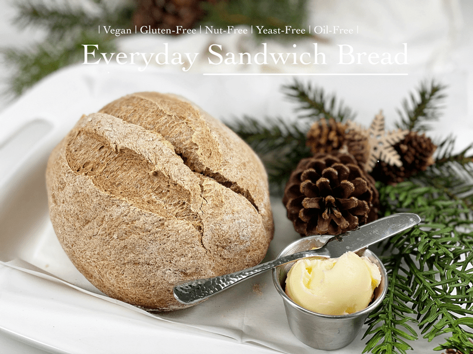
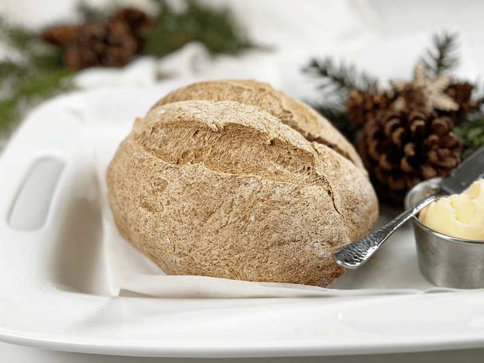
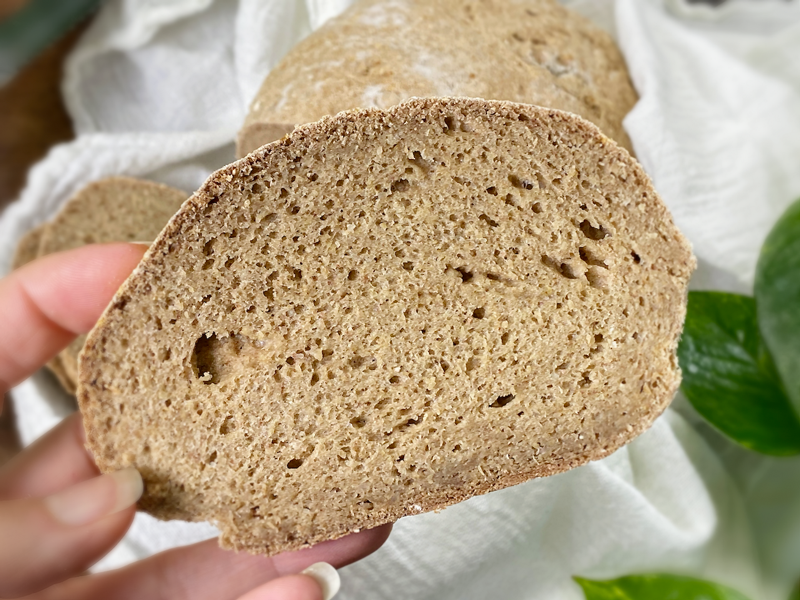
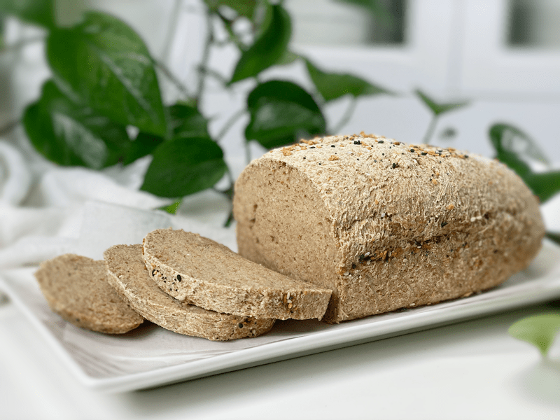
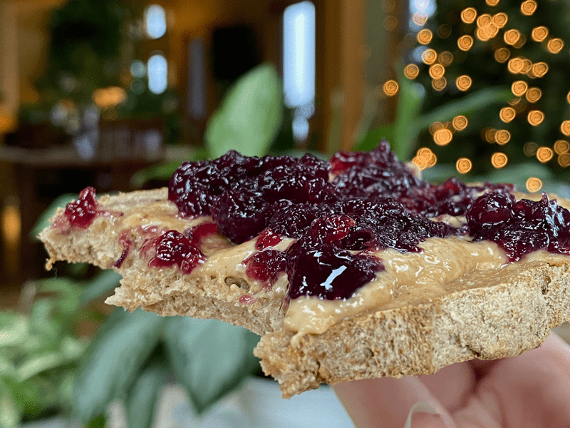
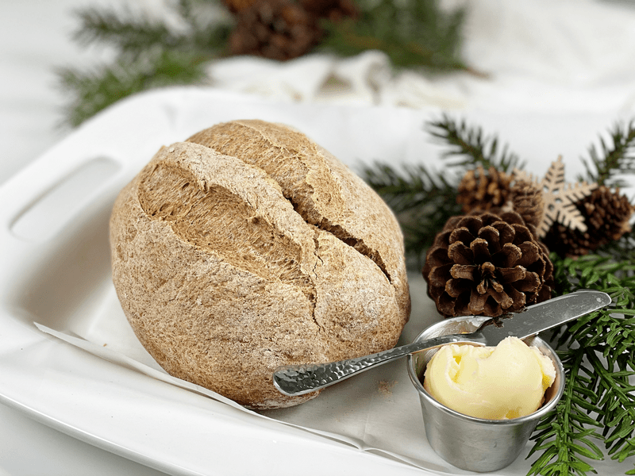

Everyday Sandwich Bread | Baked | Vegan | Gluten-Free | Yeast-Free | Oil-Free | Nut-Free
There’s nothing better than homemade bread, fresh out of the oven. This homemade rustic crusty bread is now the new rave in our household, and I hope that it will soon be in yours as well. It is gluten-free, nut-free, vegan, yeast-free, and oil-free. It may not have large airy holes like most yeast breads offer–the crumb is tighter and slightly denser–but it is glorious for sandwiches, toasted (or not) with almond butter and jam, or just served plain.

I titled this recipe Everyday Sandwich Bread because it has a lovely neutral taste that will complement any meal, dish, or craving. Bob is the main bread eater in our house. I LOVE bread, but it likes to stick to me, if you know what mean, so I limit my intake. On a regular basis, I make him raw vegan breads as well as baked ones. He enjoys them all but asked if I could make one that was closer to store-bought loaves of bread… the kind you make sandwiches with. I put my chef hat on, tightened the strings on my apron, and made my way to the studio. I resurfaced with a loaf of bread in my hands, fresh out of the oven. That’s just the kind of gal I am.

I am going to touch on the key ingredients that I used in this bread recipe. I have pulled together several types of flours, and with good reason. With gluten-free baking, a blend always performs better than a single flour does. Plus, I selected ingredients that fit our dietary needs. Can you substitute other flours? Yes, there is always wiggle room for substitutions, but you will have to experiment on your end to see what works for you.
Rolled Oats (certified gluten-free)
- Oat flour is made by simply grinding rolled oats! The result is a superfine, fluffy, and sweet flour that will make baked goods chewier and crumblier.
- If you have any type of intolerance to gluten, be sure that you seek out a brand that is certified gluten-free, which assures us that they haven’t been cross-contaminated with gluten-containing grains.
Hulled Buckwheat (whole kernels)
- For this recipe, I ground my own buckwheat flour. I personally think the flavor is superior to commercially ground buckwheat flour. It’s super easy and quick to do. I used my Vitamix blender for this 30-second task.
- You will find two types of buckwheat on the market: buckwheat with the hull still on is dark brown, while the hulled buckwheat groats (where the hull has been removed), is a grey-greenish color. I used hulled buckwheat for this recipe. The darker-colored buckwheat creates a darker and heavier flour. Curious about what brand I used? Click (here).
- Buckwheat is a great source of plant-based protein and contains all the essential amino acids.
- Buckwheat offers an assertive, earthy flavor that is great in bread.
Alternative Instead of Buckwheat
- Oat Groats – Replace the buckwheat with 1/2 cup oat groats (ground, but not too finely) and add 2 Tbsp of water when adding the sweetener. I tested this and the bread turned out wonderful. It has a bit stronger oat flavor which is to be expected. Bake the bread an extra 10 minutes.
- Sorghum whole-grain – Replace the buckwheat with 1/2 cup whole grain sorghum (ground, but not too finely) and add 2 Tbsp of water when adding the sweetener. I tested this and the bread also turned out wonderful. The overall flavor of the bread was neutral. Bake the bread an extra 10 minutes.

Sorghum Flour
- Ground from the kernel of the sorghum plant, this flour is a powerhouse of nutrition. It is a gluten-free ancient cereal grain.
- It has a smooth texture that makes it well suited for this bread.
- There are many health benefits to sorghum, but I lean toward it because it is rich in fiber, which benefits your digestive system and helps you feel fuller for longer.
- It has a light color and texture and a mild, sweet flavor, making our white sorghum flour a popular alternative to wheat flour and a wonderful ingredient for gluten-free baking.
- If you can’t find sorghum flour in your local grocery store, you can order it (here). If you don’t mind spending a few extra dollars you can get sprouted flour (here).

Arrowroot Powder
- Commonly labeled as arrowroot powder, arrowroot flour, and arrowroot starch.
- This powder is made through the extraction of starch from the arrowroot plant, without the use of high heat or harsh chemicals.
- Adding arrowroot flour to your recipe helps to create a lighter and fluffier result, but it also works to bind all the ingredients together. Another reason I added it is because it creates a wonderful crust.
- You can find organic arrowroot powder (here).

Psyllium Husks
- There is NO replacement for psyllium powder in this recipe. I’m going to put my foot down and stand firm on this statement.
- I have provided 2 different measurements down below, depending if you are going to use psyllium powder or the husks. I found that the husks provide a less dense texture, which is our preference.
- It works as a binder, along with giving the bread that bread-like, spongy texture that we crave.
- Psyllium husks come in different grades of purity, which affects the color of the husks, which range from brown to off-white color. Lower-quality psyllium can cause a purplish hue to your bread, so try to use a high-quality brand. I will provide some links to the ones that I recommend. Organic India, Psyllium, Whole Husk, 12 oz, Herbal Secrets USDA Certified Organic Psyllium Husk, Anthony’s Organic Whole Psyllium Husks, and Indus Organics Psyllium Husk Whole, 1 Lb Bag, Premium Grade, High Purity.

Tips and Techniques
- No loaf pan is required for this recipe. I intended for it to be a rustic bread–free-flowing, if you will. Therefore, you just need a baking sheet and parchment paper. However, I have tested baking this bread in a bread loaf pan and it came out beautifully. See photos and tips below.
- Have fun and form the dough into any shape you want: baguette, buns, French bread style, etc.
- My oven is electric, so the outcome of the bread may differ if your oven is gas. If using a gas oven, I suggest baking the bread on a baking stone, which will provide consistent, even heat. Just as there is a science in how to MAKE bread, there is also a science in how to BAKE bread. I won’t go into detail, but you can read more about (here).
- If at all possible, weigh out the measurements of the ingredients. To measure without a scale, use a spoon to fluff up the flour within the container. Spoon the flour into the measuring cup and use a knife or other straight-edged utensil to level the flour across the measuring cup.
I hope you enjoy this recipe. Please leave a comment below. blessings, amie sue
 Ingredients
Ingredients
Preparation
Psyllium Gel
- Quickly whisk the water and psyllium husk powder in a mixing bowl. It will instantly start to gel, which is to be expected. Set aside while you prepare the remaining ingredients, so it can thicken.
- Preheat the oven to 350 degrees (F).
- Line a baking sheet with parchment paper, sprinkled with a little extra flour.
Dry Ingredients
- In the mixing bowl that we are going to knead the bread in, whisk together the oat flour, sorghum flour, buckwheat flour, arrowroot, baking soda, baking powder, and salt.
- If you have a sifter, use that to thoroughly incorporate all the dry ingredients.
Mixing the Dough
- Add the psyllium gel and drizzle the honey around the bowl.
- Using either a hand mixer or a free-standing mixer with dough attachments, knead for 5 minutes (set a timer on your phone) to ensure that it gets kneaded enough (don’t we all love feeling needed?).
- Start the mixer on low until the flour is folded in, then turn it up one speed. If you start off at too high a speed, the flour will jump out of the bowl. If the dough feels too wet, add a tablespoon of arrowroot, and if it feels too dry, add a tablespoon of water
- You can do this by hand, but plan on kneading the dough for up to 10 minutes.
- Shape the dough into a round or oblong shape and place it on the baking sheet. After I shaped the bread, it measured 6.25″ x 4″ and once it was done baking, it measured 7″ x 5.5″. (You don’t have to aim for this, just a point of reference.)
- Score the top of the bread with the tip of a sharp knife, going no more than 1/4″-1/2″ deep. This creates that wonderful texture that you see in the photos.
- Bake on the center rack for 50-60 minutes.
- Take the loaf out of the oven and turn it upside down. Give the bottom of the loaf a firm thump! with your thumb, like striking a drum. The bread will sound hollow when it’s done.
- When it’s done baking, slide it onto a cooling rack and wait to cut when cool.
Storage
- Once the bread has thoroughly cooled, you can wrap it. It should last up to roughly 5 days.
- Brown paper bag: This will better protect your loaf and allow for good air circulation, meaning that your crust won’t get soft. Some people claim that a sliced loaf stored cut-side down in a paper bag will stay the freshest.
- Plastic bag: If you want to avoid staling at all costs, go with a plastic bag. Make sure to get as much air out of there as possible before sealing. Your crust will soften, but your bread won’t dry out or harden prematurely. Make up for unwanted softness with toasting.
- Tea towel: Wrap the bread in a tea towel, then place it in the bread box.
- Fridge: Whether you store it in the fridge is up to you. Many people feel that bread in the fridge turns stale quicker. If you’re not going to finish a loaf in the first few days after baking it, you might want to freeze it until you’re ready to eat it.
- Freezing: Rather than freezing the loaf as a whole, preslice it and place wax or parchment paper in between each slice before sliding it into a freezer-safe container. That way you can pull out 1,2, or as many slices as you want.
© AmieSue.com